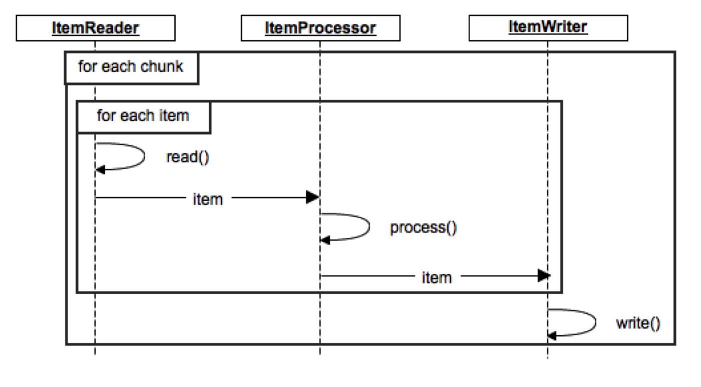
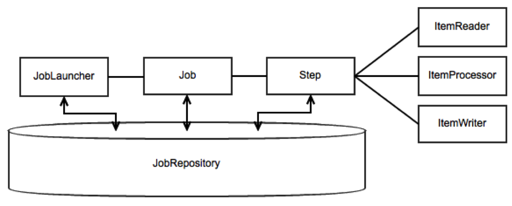

The Ways of Spring Batch
An introduction to Spring Batch
Created by Michael Minella / @michaelminella
A long time ago, in a basement
far, far away...
About the Speaker

- Author of Pro Spring Batch
- Member of the expert group for JSR-352
- Project lead for Spring Batch
- Twitter: @michaelminella
- I am not involved in the making of that video
What are we going to talk about?
3
Batch Processing
Spring Batch Concepts
Build an app
What's with the video?
- Released in 2003
- 1.1 million downloads in the first 2 weeks
- Downloaded 40 million downloads on YouTube
- 2008 Apache Logs were released
- Who is watching this?
How can we find out?
Batch Processing to the rescue!
What is
batch processing?
Batch processing, ... is defined as the
processing of data without interaction or
interruption
Maintainability
Scalability
Availability/Reliability
Extensibility
Security
Portability
Enter Spring Batch
Features
- Transaction management
- Chunk based processing
- Declaritive I/O
- Start/Stop
- Retry/Skip
- Scalability options including:
- Multithreaded steps
- Parallel steps
- Remote chunking
- Partitioning
- Hadoop integration
What can I use it for?
Anything that doesn't require interaction
Uses
Nightly batch processing
ETL processing
Multithreaded processing
Master/slave configurations
Hadoop orchestration
A Batch Application
Application
Core
Infrastructure
Lingo
Job
Step
Item
Chunk
A Job
→
Step 1
Tasklet
→
Step 2
Reader
Processor
Writer
→
Step 3
Tasklet
Chunk based processing
State Management
Our Job
Spring Boot
Star Wars Job
→
Split Files
SystemCommandTasklet
→
Import
FlatFileItemReader
GeocodingItemProcessor
JdbcBatchItemWriter
→
Generate Report
ReportTasklet
Images provided by
- http://www.flickr.com/photos/quinnanya/4718215678/
- http://www.flickr.com/photos/lastbeats/2550737319/
- https://i.chzbgr.com/maxW500/2316855552/hC3AE2E25/